New in 0.6.5
Your Hearth PCs work together, your friends live in Game Mode, the stores sit next to your library, and typing with a controller is quick. Release notes and what's next are in the docs.
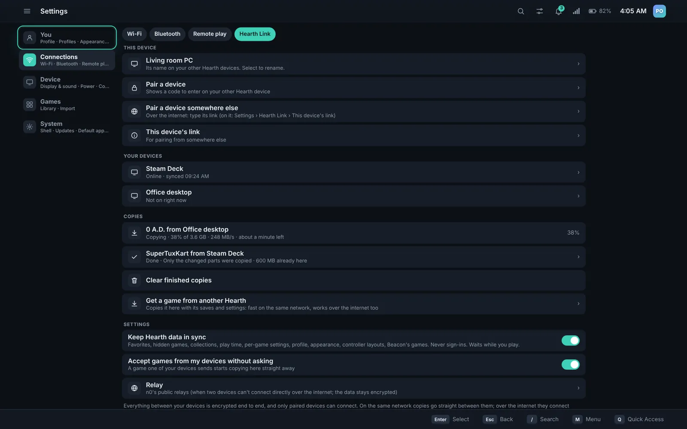
Pair your Hearth PCs and copy games between them
Pair once with a short code. Then copy a game from one Hearth to another with its saves and settings, on your network or over the internet. In tests a copy ran at about 2 Gbit/s. An update only moves the parts that changed, and a copy that stops picks up where it left off.
- Library, play time, settings and layouts stay in sync
- Sign-ins never move between devices
- Encrypted end to end; only paired devices connect
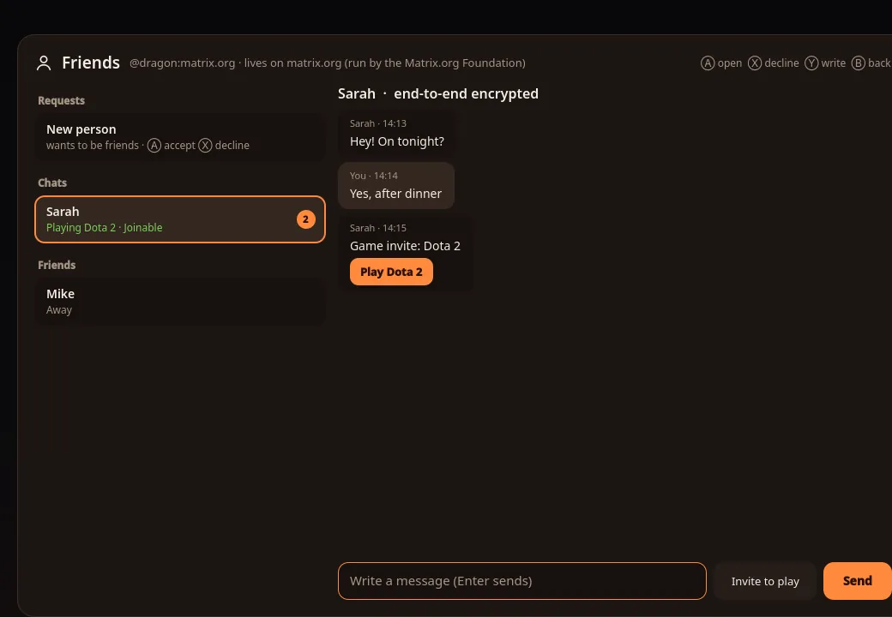
Your friends and chats, without leaving Hearth
Friends and chat run on Matrix, an open, end-to-end encrypted chat network. See who's online and what they're playing, chat one to one or in groups, and send an invite that opens the game for them.
- Invite to play, and Join game from a friend's status
- Play together by streaming your game to a friend
- Friends only by default: strangers can't message you
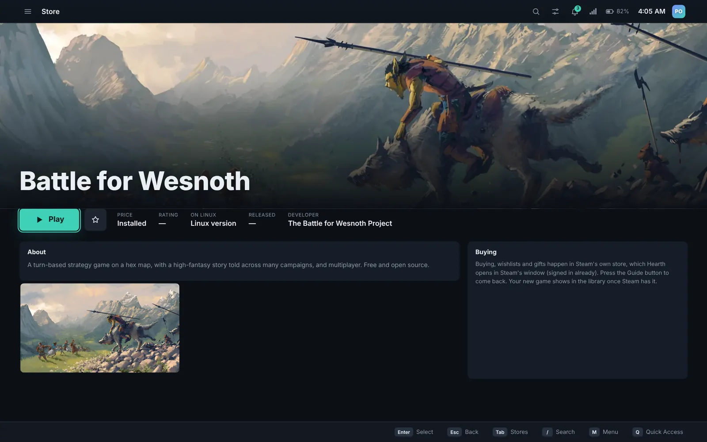
Browse and buy from the stores with a controller
The Store tab has a section for Steam, GOG, Epic and Xbox: featured games, deals, new releases and search. It uses the same sign-in as your Library, so you sign in to a store once and it shows what you already own.
- Games you own say Installed or In your library
- Buying happens on the store's own page
- Made for a controller, works with a mouse
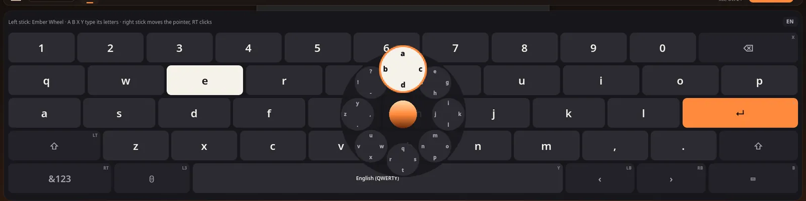
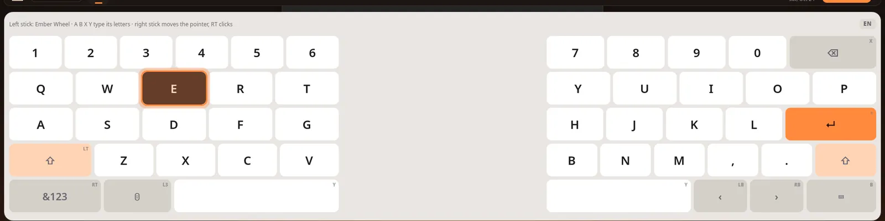
A keyboard made for thumbs
Type with the Ember Wheel, letters around the stick, or split the keyboard so each stick types on its own half. Word suggestions come from the device itself and never go online.
- 10 layouts, plus emoji, clipboard and a number pad
- Themes, and the ember glow on the key you're on
- Stays out of the way when you type on a real keyboard
WabbajackWhole modlists
Mods from Nexus Mods and Wabbajack
Select Mod Manager Download on Nexus Mods and Hearth Mods takes it from there. Wabbajack modlists install the same way, all of them in one go.
- Choose links, copies or an overlay per game
- Turn a mod off without hunting for its files
- Bazaar is the app storeFlathub apps in Desktop Mode come from Bazaar, on Anatase and Peppermint.
- Sleep like SteamOSOn handhelds, the power button puts the device to sleep and wakes it the way a Steam Deck does.
- Your Steam library from the deviceHearth reads the games Steam has on this device, wherever Steam keeps them.
- A safety net for sign-insStore sign-ins are kept safe through updates and restarts, so you don't sign in again.
Already here in 0.6 (the Hearth apps, keyboard & mouse, Hearth Files, Beacon 0.0.18) and earlier releases
0.6.0–0.6.4: a full set of Hearth apps, keyboard & mouse mode with Settings › Appearance › Made for and three keyboard & mouse layouts, Hearth Files as the default file manager and the Open/Save window everywhere, Settings › Default apps, Beacon 0.0.18 (add any Windows game, compatibility tools), Claude on Hearth OS, and fixes for Steam, the overlay and Nvidia.
0.2–0.5: 16 library layouts, Beacon built in, a fail-safe that frees Hearth and sends a report, Couch Co-op with streamed and split-screen multi-seat, installer ISOs, Quick Resume through Restart and Shut down, the new in-game overlay and a full Hearth Files.
0.1.5–0.1.9: Hearth Input (a controller layout plays keyboard-and-mouse games, with gyro and back paddles), Quick Resume with a number per game, every Handheld Daemon setting inside Hearth, and Mantel as a full desktop.
0.1.1: Couch Co-op, split-screen for 2 to 4 players even in games without it (not with anti-cheat), and Multi-seat, one PC as several consoles.
0.1.0: Hearth Browser, a Task Manager and Files app made for a controller, and self-testing updates.
Made for a controller from the first screen
Game Mode runs fullscreen in gamescope, the compositor SteamOS uses. Everything is a press away, and it works just as well with a keyboard and mouse.
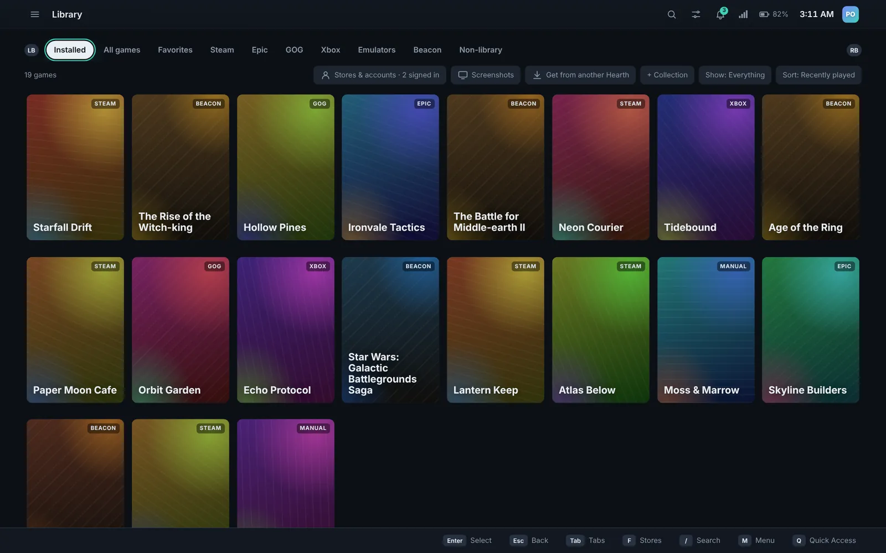
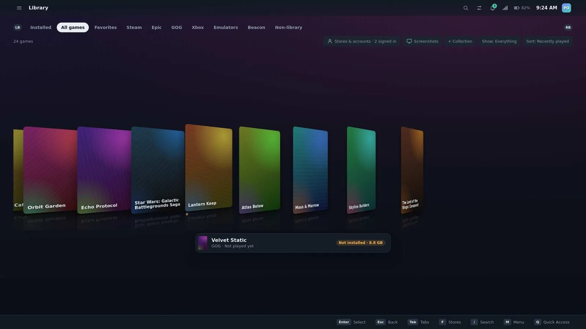
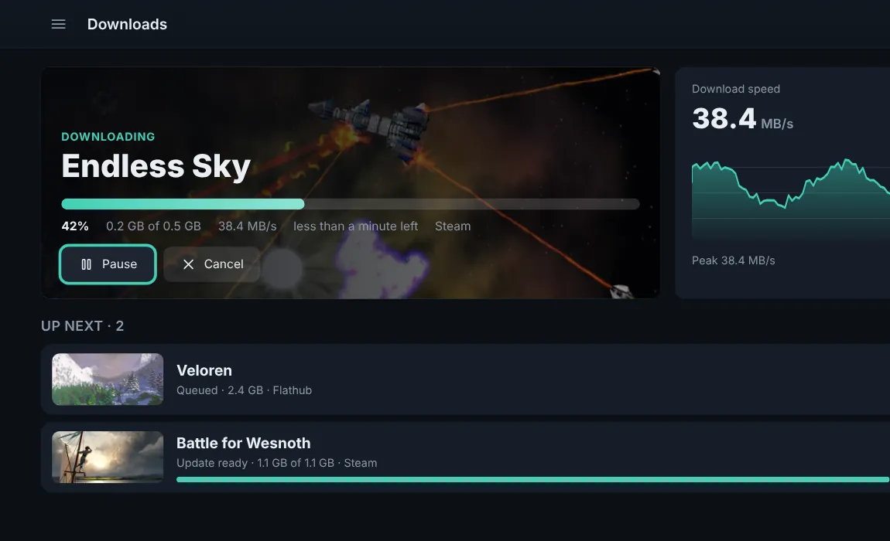
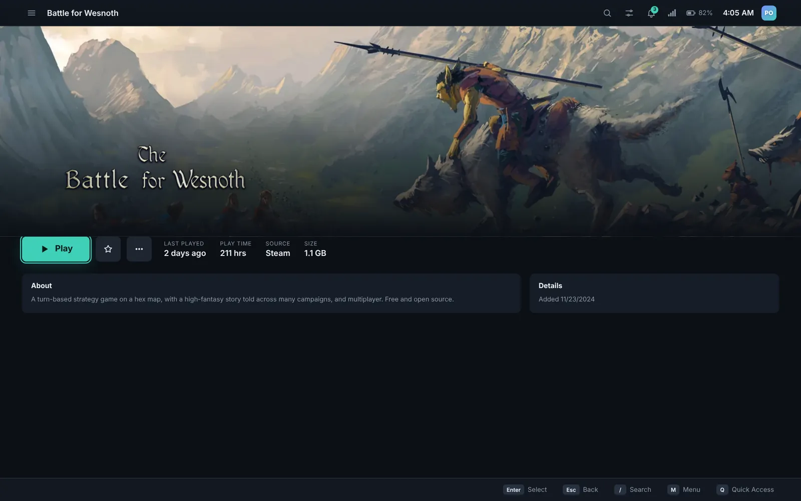
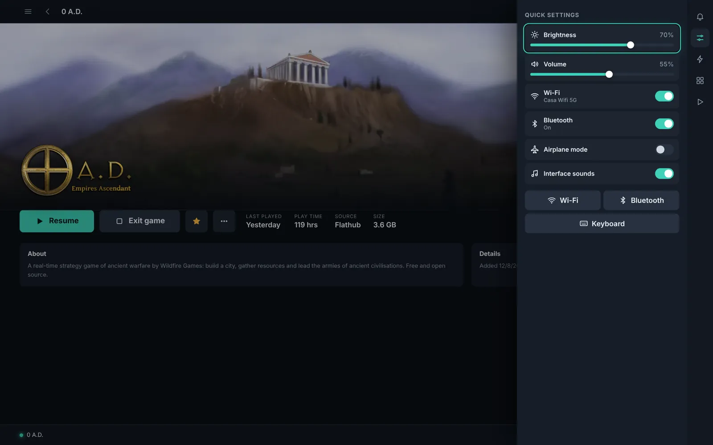
- Quick ResumeUp to five games paused in memory, kept through restarts.
- Cloud savesFor Epic and GOG, next to Steam's own.
- ProfilesEach with its own library and an optional PIN; parental controls.
- Works offlineGame art is kept on the device.
- Hearth InputPlays games that have no controller support.
- Nothing injectedThe overlay is an ordinary window, so anti-cheat has nothing to object to.
Every store, one sign-in each
Sign in to a store once and its games join your library and its section of the Store. Epic and GOG games install, update and uninstall without their launchers.
- Steam
- Epic Games
- GOG
- Xbox PC games
- Xbox Cloud Gaming
- Beacon
- Emulators
- Your own games
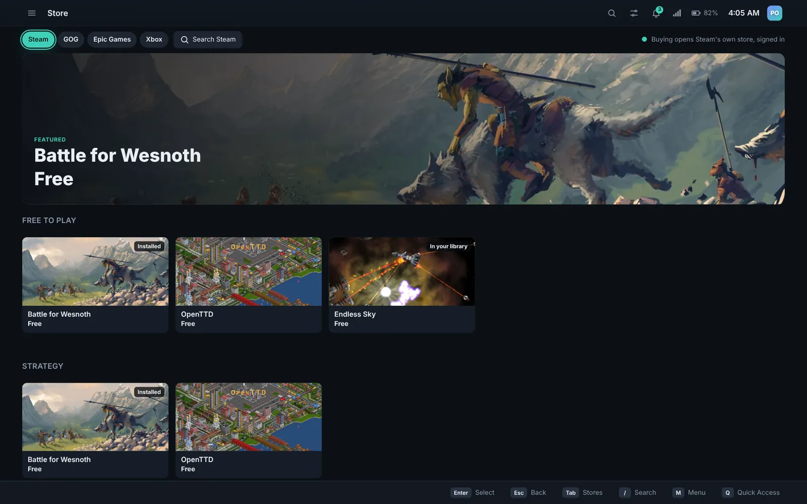
Play together, across every Hearth you own
Hearth Link copies a game from one of your PCs to another instead of downloading it again, and keeps your Hearth the same on each.
Same networkStraight across; about 2 Gbit/s in tests
Over the internetDirectly when the networks allow, otherwise through an encrypted relay
- Only what changedUpdating a game you copied before moves only the changed parts.
- Picks up where it stoppedClose the lid or lose the connection; the copy resumes.
- Never your sign-insLibrary, play time, settings and layouts sync. Passwords and store sign-ins stay on each device.
Friends in Game Mode
See who's online and what they're playing, chat, and invite them to your game. A friend who's playing shows Join game; Play together streams your game to them so you can play side by side from different homes.
Friends and chat use Matrix. Only people you've accepted can message you.
Couch Co-op and Multi-seat
Split-screen for 2 to 4 players, even in games that don't have it, or one PC as several consoles with a screen each. Both are Beta Experimental and don't work with anti-cheat games.
The apps you need, already there
Hearth's own apps open with a controller, a keyboard or a mouse, share one look, and are the defaults for the files they open. Settings › Default apps changes that.
Work
- Hearth Text
- Office: Write, Sheets, Slides
- Documents
- Calculator
Watch and make
- Photos
- Player
- Paint
- Recorder and Camera
Every day
- Calendar
- Clock
- Notes
- Weather
- Contacts
- Maps
Your devices
- Hearth Files
- Nearby Share
- Hearth Connect
- Share
For games
- Controller Lab
- Saves
- Mods
- System tools
- Claude
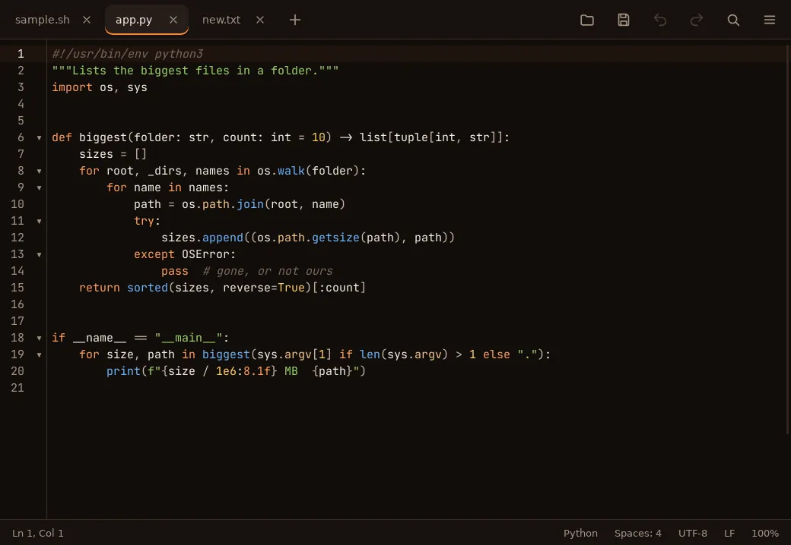
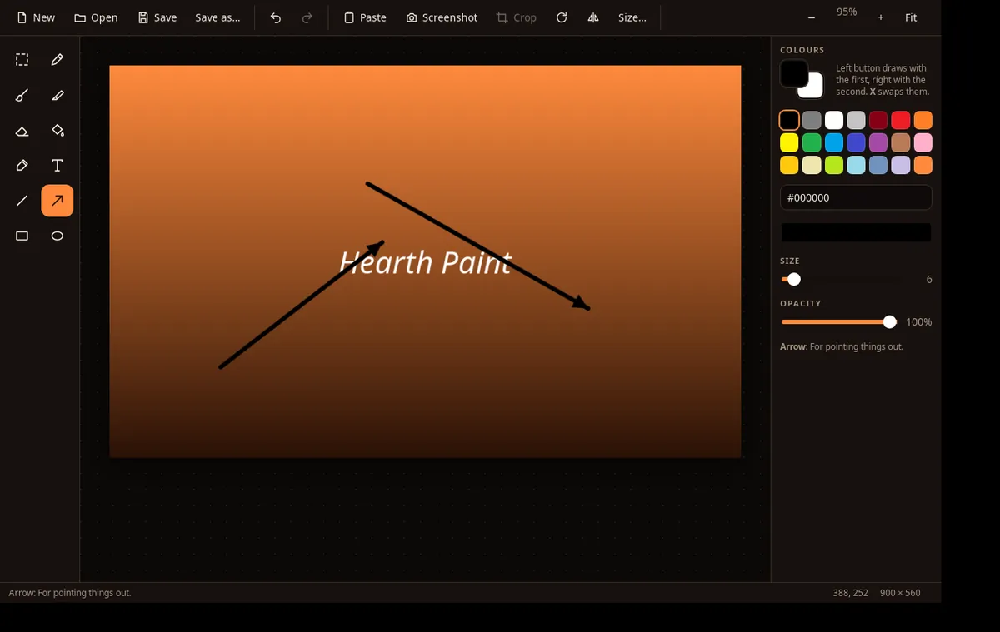
A real desktop, one button away
Mantel is Hearth's desktop for browsing, mods and files. Hop over and back without logging out. The Hearth menu opens with a press of the controller's Hearth button, and the stick picks from it.
- Hearth Browser (Firefox), Hearth Files and Task Manager
- The controller as mouse and keyboard
- Snapping, Alt+Tab, four desktops, clipboard history
- The same desktop on Windows, as Ember


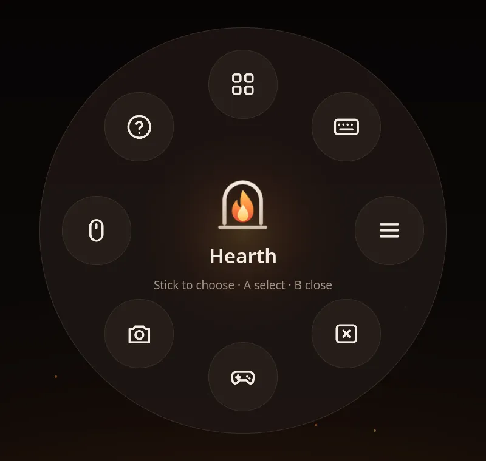
Keyboard and mouse, when you'd rather
Hearth notices when you type or move a mouse: the on-screen keyboard stays away, actions show on hover, and right-click opens menus. Settings › Appearance › Made for picks Automatic, Mouse & keyboard or Controller.
- Three layouts for Home and the Library: Desk grid, Table and Launcher
- Shortcuts for everything, listed in Settings
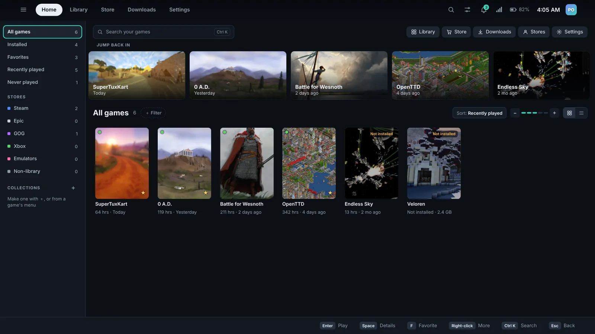
At home on a handheld
Handheld Daemon is built in and its settings live in Hearth's own screens. Sleep and wake work like a Steam Deck, and Quick Access opens over whatever you're playing.
- Power mode, watt limit and frame cap, per game
- Remap any button and save the layout per game
- Tested on the ROG Ally and Xbox Ally
An update can't break your system
Hearth OS is image-based: the whole system is one tested image that updates in one piece. It can't half-install, and the version before stays on the drive.
- It downloads in the backgroundThe new image comes down while you play, as one piece.
- You restart into itWhenever suits you. Your games, saves and files stay as they are.
- The last version staysIt waits in the boot menu, ready.
- Something wrong? Go backPick it at start-up, or run
sudo bootc rollback.
- Based on
- Anatase (Fedora 44/45, bootc image); Peppermint (Debian 13) edition, Beta Experimental
- Architecture
- x86-64
- Desktop
- Game Mode (gamescope) and Mantel (labwc, Quickshell)
- Packages
- Image-based (bootc) updates, Flatpak apps from Bazaar
- Init
- systemd
- Status
- Beta
- Latest release
- 0.6.53 (2026-10-25), release notes
- License
- Free and open source (GPL-3.0)
One image for AMD, Intel and Nvidia. Nvidia GTX 16 / RTX 20 and newer work from the same ISO, with no separate download.
Sign in your way. Like a console with no password, or with a password at start and after sleep. The lock and login screens work with a controller.
Its own installer. Next to Windows or on the whole drive, and it brings your games over.
Two editions, the same Hearth
Hearth looks and works the same on both. What changes is the Linux underneath. You can switch later without a USB stick.
Hearth OS on Anatase
Lean and image-based, from people who worked on Bazzite: Fedora underneath. One ISO for AMD, Intel and Nvidia, with Handheld Daemon built in. Every change is tested here first.
Hearth OS on Peppermint
Peppermint OS on Debian 13, made into an image, for people who like Debian's steady pace.
The Ubuntu and CachyOS editions are archived for now while Anatase and Peppermint get polished. They'll be back. Systems on them can switch from Settings › Updates.
Why Hearth left Bazzite, and moving from Hearth OS on Bazzite
- Too much it doesn't use: Bazzite's Game Mode setup, KDE, tools and services cost space, memory and start-up time.
- Heavier than it should be: 8 to 10 GB installs, bigger updates, sluggish on Nvidia.
- Two of everything: a separate Nvidia image and ISO; Anatase is one for every PC.
- Better handhelds: Handheld Daemon, shown in Hearth's own screens.
- Hearth OS on Bazzite is archived (0.1.3 was its last update). Move from Settings › Updates › Move to a new Hearth OS; games and saves stay. All editions install from the small installer, Anatase also from the offline USB.
Get Hearth OS 0.6.53
For handhelds and PCs with AMD, Intel or Nvidia (GTX 16 / RTX 20 and newer) graphics. Already on Bazzite or Fedora Atomic? Switch with one command.
Hearth OS on Anatase
Installing erases the drive you pick, or goes next to Windows. The offline USB has everything and installs without internet; the small installer downloads while it installs and offers every edition.
SHA-256 checksums: offline USB, small installer. Peppermint and more in Installing.
Installing from the ISO
- Write it to a USB stick16 GB or more, with Fedora Media Writer or balenaEtcher.
- Boot from the USBBoot menu: often F12, F11 or F8. ROG Ally: hold Volume Down at power-on.
- Try it outThe live system starts in Hearth with a welcome card. Nothing changes yet.
- Choose Install HearthPick a drive and restart when it's done.
Switch from Bazzite, Fedora Atomic or another image-based system
Bazzite, Bluefin, Aurora, Silverblue or Kinoite switch with one command, no USB stick. Your account and files stay, and the old system stays in the boot menu. Beta Experimental: back up first. Peppermint can't be switched to this way; use the small installer.
From Bazzite, Bluefin, Aurora or Fedora Atomic
sudo bootc switch ghcr.io/dragongamer9/hearth-os:latestOlder system without bootc, or going back
sudo rpm-ostree rebase ostree-unverified-registry:ghcr.io/dragongamer9/hearth-os:latestTo go back, pick the previous boot entry or run sudo bootc rollback. Hearth OS updates itself from Settings › Updates.
From Hearth OS on Bazzite
Settings › Updates › Move to a new Hearth OS keeps your games, saves and store libraries (the rest of home is set aside for 30 days). Or in Desktop Mode:
pkexec /usr/libexec/nimbus/hearth-admin move-to-new-osThis is a beta. Hearth OS and Ember aren't ready to be your everyday system yet, and things will break now and then. Updates come out almost daily and install themselves. Keep a backup, and tell us what breaks.
On Windows 11? Try Ember
Ember is Hearth's sister app: the same library and the Mantel desktop as a Windows shell. Switch back to Explorer any time.
In PowerShell:
irm https://raw.githubusercontent.com/Dragongamer9/hearth-os/main/tools/install-nimbus.ps1 | iexThe AppImage is Hearth's Game Mode, to try on the Linux you already have.
Questions
What hardware does it need?
Steam Deck, ROG Ally, Legion Go and most x86-64 desktops and laptops with AMD, Intel or Nvidia (GTX 16 / RTX 20 and newer) graphics. For installing, a USB stick of 16 GB or more and a drive of 64 GB or more.
Can I go back?
Yes. Updates and switches keep the previous system in the boot menu; pick it, or run sudo bootc rollback.
Does it work with anti-cheat games?
Nothing is injected into games; the overlay is an ordinary window. Couch Co-op doesn't support anti-cheat games.
Do I need two Hearth PCs for Hearth Link?
Hearth Link is for copying games and keeping Hearth in sync between your own Hearth devices, so yes. Friends, chat and Play together work with one.
Is it really free?
Yes. Hearth OS is free and open source under the GPL-3.0. Games you buy come from the stores as usual.
Something broke. How do I report it?
Send logs from Settings › System or with hearth-send-logs, and tell us what happened.
Game art credits
The games in the Game Mode screenshots are real open-source games with their own art, used under CC BY-SA and the GPL. Each is shown only on the stores it's really on, and all are free.
Every picture, its author, licence and source
Art from SuperTuxKart, 0 A.D., The Battle for Wesnoth, Veloren, OpenTTD and Endless Sky. It is only cropped, resized and converted to WebP, as noted for each picture, and each keeps its own licence; the screenshots on this page that show it are shared under the same terms. The names belong to their projects, and Hearth OS isn't affiliated with them.
SuperTuxKart
- stk-cover.webp: Menu background of the Cartoon skin, by LCP and QwertyChouskie. CC BY-SA 4.0. From background.jpg; cropped to 720×1080 (from x 780), resized to 600×900.
- stk-hero.webp: Menu background of the Cartoon Forest skin, by LCP and QwertyChouskie. CC BY-SA 4.0. From background.jpg; resized to 1600×900.
- stk-wide.webp: Menu background of the Cartoon Desert skin, by LCP and QwertyChouskie. CC BY-SA 4.0. From background.jpg; resized to 640×349.
- stk-logo.webp: SuperTuxKart logo, by rastapax. CC BY-SA 3.0 or later. From logo.png; converted to WebP only.


0 A.D.
- 0ad-cover.webp: Main menu background (Hellenes), by Wildfire Games. CC BY-SA 3.0. From hellenes1-1.png; cropped to 683×1024 (from x 500), resized to 600×900.
- 0ad-hero.webp: Main menu background (Hellenes), by Wildfire Games. CC BY-SA 3.0. From hellenes1-1.png; resized to 1600×800.
- 0ad-wide.webp: Main menu background (Hellenes), by Wildfire Games. CC BY-SA 3.0. From hellenes1-1.png; resized to 640×320.
- 0ad-logo.webp: 0 A.D. Empires Ascendant logo, by Wildfire Games. CC BY-SA 3.0. From 0ad_logo.png; converted to WebP only.


The Battle for Wesnoth
- wesnoth-cover.webp: Story art from The Rise of Wesnoth campaign, by Emilien Rotival (LordBob), credited for the campaign's story art; The Battle for Wesnoth Project. GPL-2.0-or-later. From trow_intro_04.webp; cropped to 720×1080 (from x 200), resized to 600×900.
- wesnoth-hero.webp: Story art from The Rise of Wesnoth campaign ("A Harrowing Escape"), by Emilien Rotival (LordBob), credited for the campaign's story art; The Battle for Wesnoth Project. GPL-2.0-or-later. From trow_story_03-A_Harrowing_Escape.webp; resized to 1600×900.
- wesnoth-wide.webp: Story art from The Rise of Wesnoth campaign ("A New Land"), by Emilien Rotival (LordBob), credited for the campaign's story art; The Battle for Wesnoth Project. GPL-2.0-or-later. From trow_story_15-A_New_Land.webp; resized to 640×360.
- wesnoth-logo.webp: The Battle for Wesnoth logo, by The Battle for Wesnoth Project. GPL-2.0-or-later. From logo.png; converted to WebP only.


Veloren
- veloren-cover.webp: Loading screen background, by Veloren contributors. GPL-3.0. From bg_5.jpg; cropped to 720×1080 (from x 240), resized to 600×900.
- veloren-hero.webp: Loading screen background, by Veloren contributors. GPL-3.0. From bg_12.jpg; resized to 1600×900.
- veloren-wide.webp: Loading screen background, by Veloren contributors. GPL-3.0. From bg_20.jpg; resized to 640×360.


OpenTTD
- openttd-cover.webp: Screenshot of the OpenTTD 1.4 title screen, with OpenGFX graphics, from openttd.org, by The OpenTTD team and the OpenGFX authors. GPL-2.0. From 1.4-02-opengfx-1920x1200.png; cropped to 760×1140 (from x 0, y 60), resized to 600×900.
- openttd-hero.webp: Screenshot of the OpenTTD 1.4 title screen, with OpenGFX graphics, from openttd.org, by The OpenTTD team and the OpenGFX authors. GPL-2.0. From 1.4-02-opengfx-1920x1200.png; cropped to the top 1920×480, resized to 1600×400.
- openttd-wide.webp: Screenshot of the OpenTTD 1.4 title screen, with OpenGFX graphics, from openttd.org, by The OpenTTD team and the OpenGFX authors. GPL-2.0. From 1.4-02-opengfx-1920x1200.png; cropped to 790×444 (from x 1130, y 720), resized to 640×360.


Endless Sky
- es-cover.webp: Screenshot from the Endless Sky website, by Michael Zahniser and Endless Sky contributors (game graphics). CC BY-SA 4.0. From fight.jpg; cropped to 400×600 (from x 130).
- es-hero.webp: Screenshot from the Endless Sky website, by Michael Zahniser and Endless Sky contributors (game graphics). CC BY-SA 4.0. From beams.jpg; converted to WebP only.
- es-wide.webp: Screenshot from the Endless Sky website, by Michael Zahniser and Endless Sky contributors (game graphics). CC BY-SA 4.0. From fight.jpg; cropped to 800×450 (from y 75), resized to 640×360.
- es-logo.webp: Endless Sky title, by Michael Zahniser. CC BY-SA 4.0. From title@1x.png; converted to WebP only.